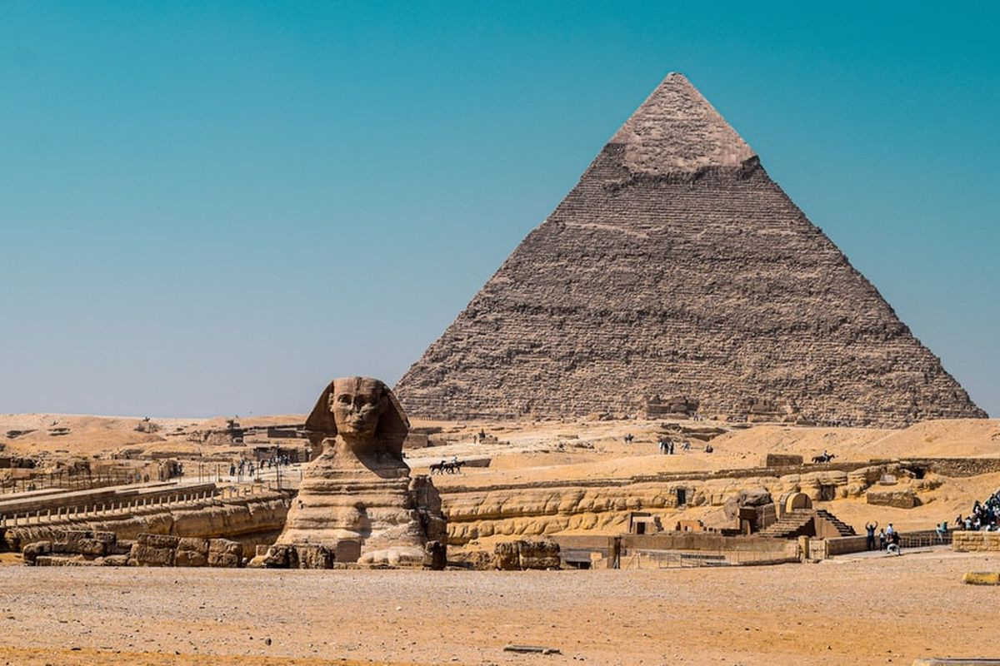
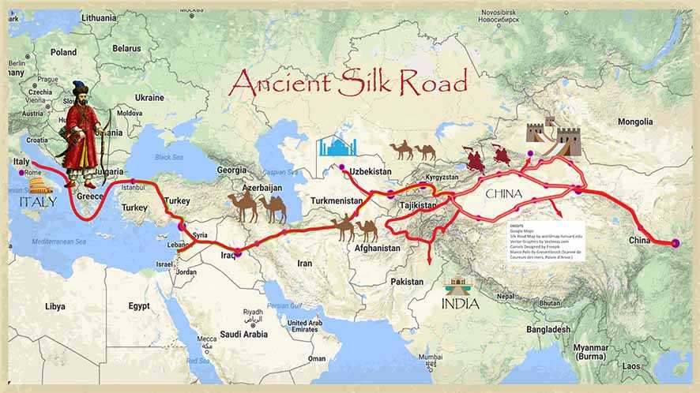

Galeri Foto Bersejarah

Penemuan Piramida
Dokumentasi pertama Ekspedisi Giza, 1890.

Jalur Sutra Lama
Para pedagang melewati pegunungan pada abad ke-14.

Era Renaissance
Kebangkitan Peradaban Modern Eropa, “Historie de France”.